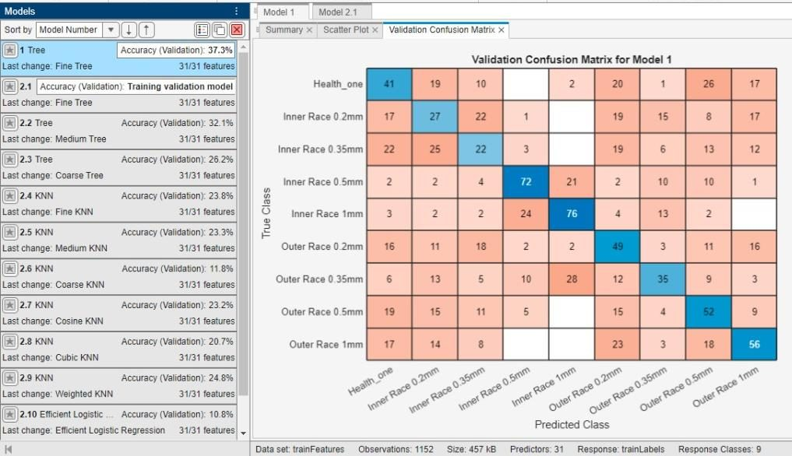

Vibration and Sound Diagnosis of Ball Bearings with Defects
What
Multi-sensor dataset recorded on a provided test rig for diagnosing ball bearing faults from vibration, sound and motor current, with a preliminary classifier.
Role
Recorded vibration, sound and motor current from nine EDM-defect bearings on a provided rig, studied the spectra and trained a first classifier, in a team of 4.
Results
- Nine 6203 bearings with EDM defects of 0.2, 0.35, 0.5 and 1.0 mm, tested at motor voltages from 15 to 60 V.
- Spectral energy and peak amplitude grew with defect size in sound, vibration and motor current.
- The preliminary classifier reached a ROC AUC between 0.62 and 0.80.

Problem
Bearing wear is a common cause of rotating machine failure and shows up in vibration, sound and motor current. The project builds a labelled multi-sensor dataset from bearings with controlled defect sizes and looks at which frequency ranges show the faults, as groundwork for machine learning classification.
Method
- Nine 6203 deep groove bearings (17 mm bore, 40 mm outer diameter, 12 mm width): one healthy, four with inner race defects and four with outer race defects, cut by EDM at 0.2, 0.35, 0.5 and 1.0 mm.
- A DC motor drove the shaft, with supply voltage stepped from 15 to 60 V in 5 V steps (10 levels) to vary speed.
- Sensors: an ADXL335 accelerometer on the housing for vibration in the Y and Z directions, a MAX9814 microphone for sound, with motor current also recorded, acquired with an Arduino UNO, MATLAB and Simulink.
- Each bearing was tested at all ten voltages. Records ran at least 10 s at 0.00125 s steps (8000 points per test), and acoustic tests were repeated twice per voltage and averaged.
- FFT in MATLAB with log magnitude plots, up to 5 kHz for vibration, 2 kHz for current and 20 kHz for sound (ranges taken from literature).
- STFT spectrograms and CWT scalograms for each bearing condition.
- An early supervised classifier (Model 1) evaluated with a confusion matrix and ROC curves over the nine classes.
Results
In sound, the healthy spectrum is smooth, while the 1 mm inner race defect gives a dense spectrum with magnitudes above 8000 units. In vibration, healthy amplitude rarely exceeds 0.5, and defect cases show peaks of 0.6 to 1.1, mostly above 500 to 1000 Hz, with the Z direction more sensitive. In current, the healthy highest peak is just over 1.6, and defects add low-frequency fluctuation below 100 Hz and larger peaks above 700 Hz that grow with defect size. The classifier reached ROC AUC of 0.62 to 0.80. Inner Race 1 mm and Outer Race 1 mm classify well, and Outer Race 0.2 mm is confused with similar defects.
Validation
The preliminary classifier was checked with a validation confusion matrix and ROC curves.
Limitations
- The classifier is preliminary: ROC AUC only 0.62 to 0.80, some classes near random, and no accuracy figure.
- Machine learning and current-signal analysis are future work.
- One bearing per condition on a single rig, with artificial EDM cuts in place of natural wear.
- Spectra are read visually, with no feature table or statistical test.
Figures



Tools
- MATLAB
- Simulink
- Arduino
- ADXL335
- MAX9814
- FFT
- STFT
- CWT